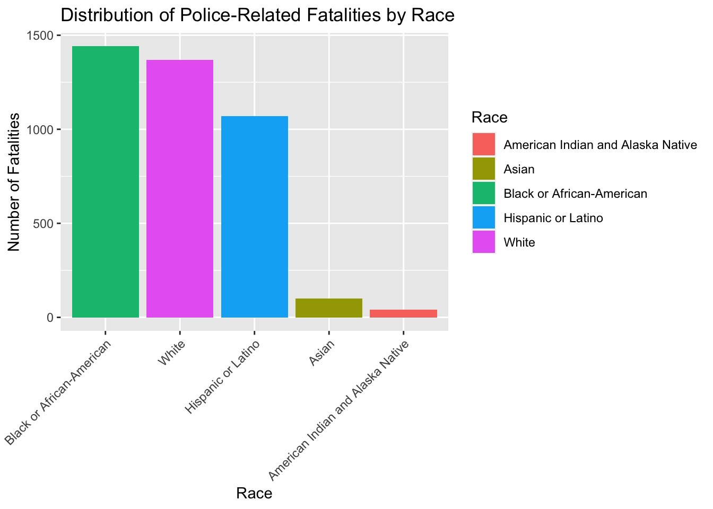
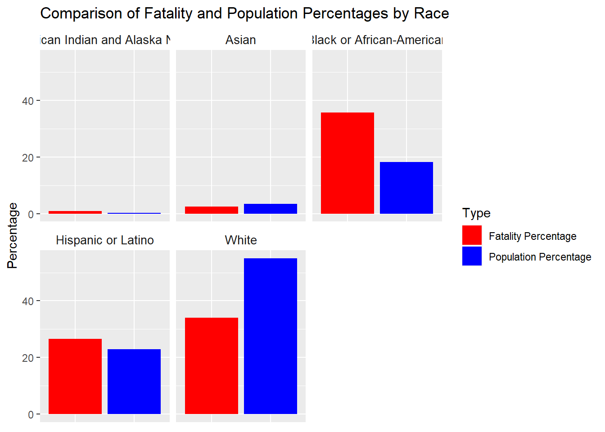
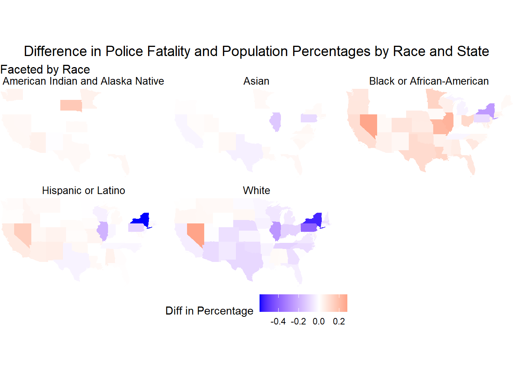
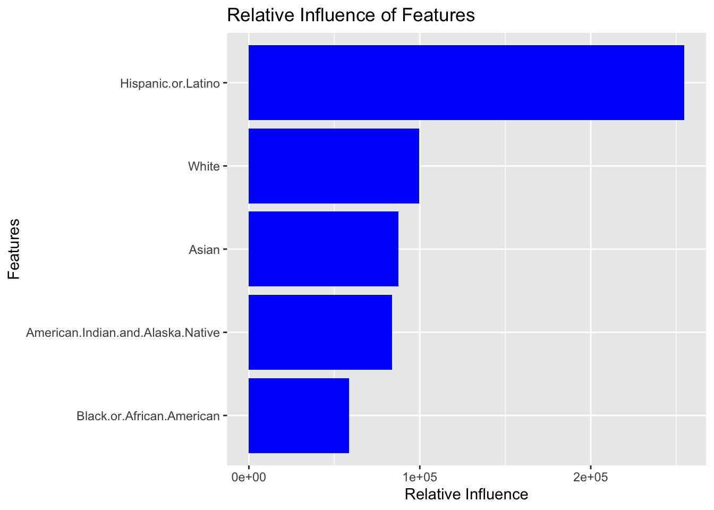

# library(tidyverse)
# print(getwd())
# data <- read_csv(here::here("dataset/loan_refusal_clean.csv"))
# load(here::here("dataset/loan_refusal.RData"))
# print(ls())Analysis
Here we provide a detailed analysis using more sophisticated statistics techniques.

This comes from the file analysis.qmd.
We describe here our detailed data analysis. This page will provide an overview of what questions you addressed, illustrations of relevant aspects of the data with tables and figures, and a statistical model that attempts to answer part of the question. You’ll also reflect on next steps and further analysis.
The audience for this page is someone like your class mates, so you can expect that they have some level of statistical and quantitative sophistication and understand ideas like linear and logistic regression, coefficients, confidence intervals, overfitting, etc.
While the exact number of figures and tables will vary and depend on your analysis, you should target around 5 to 6. An overly long analysis could lead to losing points. If you want you can link back to your blog posts or create separate pages with more details.
The style of this paper should aim to be that of an academic paper. I don’t expect this to be of publication quality but you should keep that aim in mind. Avoid using “we” too frequently, for example “We also found that …”. Describe your methodology and your findings but don’t describe your whole process.
Example of loading data
The code below shows an example of loading the loan refusal data set (which you should delete at some point).
Introduction
In recent years, police-related fatalities have become a focal point of public and academic debate, underscoring critical concerns about racial disparities within law enforcement across the United States. This analysis seeks to explore the extent to which racial disparity, especially against Black individuals, contributes to the demographics of these fatalities. The urgency of this issue is amplified by ongoing societal calls for justice and reform, making it essential to understand the patterns and factors that drive these disparities.
#Thesis Statement This research posits that racial disparity is a significant factor influencing the demographics of police-related fatalities, with Black individuals experiencing disproportionately high mortality rates in comparison to other races across various cities.
Research Questions
To provide a structured exploration of this issue, this analysis will address the following key questions:
How do mortality rates from police-related fatalities among Black individuals compare to those of other races across different cities?
What factors might contribute to any observed disparities in these mortality rates?
Are there specific geographic or demographic contexts in which these disparities are more pronounced?
Significance of the Analysis
The findings of this analysis are intended to contribute to the broader dialogue on racial equity and law enforcement practices. By examining the intersection of race and police-related fatalities, this study aims to provide data-driven insights that could inform policy decisions and advocacy efforts aimed at reducing these disparities. Additionally, this analysis will serve as an educational resource for scholars, policymakers, and the public, fostering a deeper understanding of how racial dynamics shape outcomes in law enforcement encounters.
Through a combination of quantitative methods and statistical modeling, this analysis page will offer a detailed examination of the available data, aiming to present a clear and comprehensive picture of how race influences the risk of fatality in police interactions. The next sections will describe the data used for this analysis, the methodology employed, and the results obtained,thereby framing the context for a rigorous discussion on this critical social issue.
Data Description
This analysis leverages two key datasets:
Police Fatality Dataset & U.S. Cities Demographic Dataset
To load the dataset, run the attached R script “combining-datasets.R”.
source("combining-datasets.R")
rm(police_f,us_dem,us_dem_wid)After running this R script, the two datasets we used will be merged, cleared and loaded into your environment called police_dem. For more information on these two datasets and merging process, see the data page. data page.
Exploratory Data Analysis (EDA)
Started by exploring the distribution of police-related fatalities by race.
fatalities_by_race <- police_dem |>
group_by(Race) |>
summarize(Fatalities = n()) |>
ungroup()
ggplot(fatalities_by_race, aes(x = reorder(Race, -Fatalities), y = Fatalities, fill = Race)) +
geom_bar(stat = "identity") +
labs(
title = "Distribution of Police-Related Fatalities by Race",
x = "Race",
y = "Number of Fatalities"
) +
theme(axis.text.x = element_text(angle = 45, hjust = 1))
As expected, the highest number of deaths occurred among blacks or African Americans.
The next step is to compare this with demographic data, and it would be interesting to examine the relationship between each racial group’s percentage of total deaths and their percentage of the total population of the sampled city. This would help to determine how specific racial groups are disproportionately affected.
fatalities_by_race_city_state <- police_dem |>
group_by(State, City, Race) |>
summarize(Fatalities = n(), .groups = 'drop')
population_by_race_city_state <- police_dem |>
group_by(State, City) |>
summarise(
White = first(White),
`Black or African-American` = first(`Black or African-American`),
`Hispanic or Latino` = first(`Hispanic or Latino`),
Asian = first(Asian),
`American Indian and Alaska Native` = first(`American Indian and Alaska Native`),
.groups = 'drop'
)|>
pivot_longer(cols = -c(City, State), names_to = "Race", values_to = "Population")
comparison_df <-
left_join(fatalities_by_race_city_state, population_by_race_city_state, by = c("State", "City", "Race"))|>
mutate(
FatalityPercentage = (Fatalities / sum(Fatalities)) * 100,
PopulationPercentage = (Population / sum(Population)) * 100,
diffinPercentage = FatalityPercentage - PopulationPercentage
)|>
arrange(desc(diffinPercentage))sum_df<- comparison_df|>
group_by(Race)|>
summarise(sumfatalityp = sum(FatalityPercentage),
sumpopulationp = sum(PopulationPercentage))|>
pivot_longer(cols = c(sumfatalityp, sumpopulationp), names_to = "Type", values_to = "Percentage") %>%
mutate(Type = recode(Type, 'sumfatalityp' = 'Fatality Percentage', 'sumpopulationp' = 'Population Percentage'))
ggplot(sum_df, aes(x = Type, y = Percentage, fill = Type)) +
geom_col(position = position_dodge(width = 0.8)) +
facet_wrap(~ Race) +
labs(
title = "Comparison of Fatality and Population Percentages by Race",
x = NULL,
y = "Percentage"
) +
scale_fill_manual(values = c("Fatality Percentage" = "red", "Population Percentage" = "blue")) +
theme(
axis.text.x = element_blank(),
axis.ticks.x = element_blank(),
strip.background = element_blank(),
strip.text.x = element_text(size = 10)
) 
library(tidycensus)
library(sf)states_sf <- get_decennial(geography = "state",
year = 2020,
variables = "H1_001N",
geometry = TRUE)
|
| | 0%
|
|= | 1%
|
|= | 2%
|
|== | 2%
|
|=== | 4%
|
|=== | 5%
|
|==== | 5%
|
|==== | 6%
|
|===== | 6%
|
|===== | 7%
|
|===== | 8%
|
|====== | 8%
|
|====== | 9%
|
|======= | 10%
|
|======= | 11%
|
|========= | 12%
|
|========= | 13%
|
|========== | 15%
|
|=========== | 16%
|
|============ | 17%
|
|============= | 19%
|
|============== | 21%
|
|====================== | 31%
|
|======================= | 33%
|
|======================= | 34%
|
|========================= | 35%
|
|========================================== | 60%
|
|=========================================================== | 84%
|
|======================================================================| 100%state_level_comparison_df <- comparison_df %>%
group_by(State, Race) %>%
summarize(Diff_Percentage = mean(diffinPercentage, na.rm = TRUE), .groups = 'drop')
state_data_sf <- inner_join(states_sf, state_level_comparison_df, by = c("NAME" = "State"))state_data_sf %>%
ggplot() +
geom_sf(aes(fill = Diff_Percentage), color = NA) +
scale_fill_gradient2(
low = "blue", mid = "white", high = "red", # Adjust colors if needed
midpoint = 0,
limit = c(min(state_data_sf$Diff_Percentage, na.rm = TRUE), max(state_data_sf$Diff_Percentage, na.rm = TRUE)),
name = "Diff in Percentage",
na.value = "white"
) +
facet_wrap(~ Race) +
labs(
title = "Difference in Police Fatality and Population Percentages by Race and State",
subtitle = "Faceted by Race",
fill = "Diff in Percentage"
) +
theme_void() +
theme(
legend.position = "bottom",
plot.title = element_text(size = 14, hjust = 0.5),
plot.subtitle = element_text(size = 12),
strip.text = element_text(size = 10) # Adjust facet label text size
) +
coord_sf(xlim = c(-125, -67), ylim = c(24, 50), expand = FALSE)
As shown in the graph, both White and Hispanic has a smaller police fatality rate comparing to the population percentage. However, for Blan or African-American, there is a higher police fatality rate than the population percentage comparing to other races.
Modelling
model_data<- police_dem|>
group_by(City)|>
summarise(Fatalities = n(),
Median.Age = first(Median.Age),
Male.Population = first(Male.Population),
Female.Population = first(Female.Population),
Foreign.born = first(Foreign.born),
Average.Household.Size = first(Average.Household.Size),
White = first(White),
`Black or African-American` = first(`Black or African-American`),
`Hispanic or Latino` = first(`Hispanic or Latino`),
Asian = first(Asian),
`American Indian and Alaska Native` = first(`American Indian and Alaska Native`)
)|>
arrange(desc(Fatalities))
model_data <- na.omit(model_data)
print(model_data)# A tibble: 401 × 12
City Fatalities Median.Age Male.Population Female.Population Foreign.born
<chr> <int> <dbl> <int> <int> <int>
1 Los Ang… 252 35 1958998 2012898 1485425
2 Houston 179 32.6 1149686 1148942 696210
3 Las Veg… 133 37.5 310568 313201 127609
4 Chicago 91 34.2 1320015 1400541 573463
5 Dallas 78 32.6 639019 661063 326825
6 Phoenix 75 33.8 786833 776168 300702
7 Fresno 67 30 256130 263942 103453
8 Kansas … 61 35.9 228430 246931 37787
9 San Die… 59 34.5 693826 701081 373842
10 Long Be… 52 34.6 238159 236013 127764
# ℹ 391 more rows
# ℹ 6 more variables: Average.Household.Size <dbl>, White <int>,
# `Black or African-American` <int>, `Hispanic or Latino` <int>, Asian <int>,
# `American Indian and Alaska Native` <int>write.csv(model_data, "model_data.csv", row.names = FALSE)# Loading necessary libraries
library(dplyr)
library(randomForest)randomForest 4.7-1.1Type rfNews() to see new features/changes/bug fixes.
Attaching package: 'randomForest'The following object is masked from 'package:dplyr':
combineThe following object is masked from 'package:ggplot2':
marginlibrary(caret)Loading required package: lattice
Attaching package: 'caret'The following object is masked from 'package:purrr':
lift# Reading CSV
model_data <- read.csv("model_data.csv")
# Preprocessing
features <- c("Median.Age", "Average.Household.Size", "White", "Black.or.African.American",
"Hispanic.or.Latino", "Asian", "Foreign.born")
X <- model_data[features]
y <- model_data$Fatalities
set.seed(42)
train_indices <- createDataPartition(y, p=0.8, list=FALSE)
X_train <- X[train_indices, ]
y_train <- y[train_indices]
X_test <- X[-train_indices, ]
y_test <- y[-train_indices]
# Models to compare
models <- c("lm", "rf", "gbm") # Linear regression, random forest, and gradient boosted trees
# Training models and collecting results
results <- lapply(models, function(model_type) {
model <- train(X_train, y_train, method=model_type, trControl=trainControl(method="cv", number=5))
preds <- predict(model, X_test)
mse <- mean((y_test - preds)^2)
r2 <- cor(y_test, preds)^2
list(model=model, mse=mse, r2=r2, preds=preds)
})Iter TrainDeviance ValidDeviance StepSize Improve
1 437.4290 nan 0.1000 27.4280
2 408.7813 nan 0.1000 15.7501
3 395.4170 nan 0.1000 15.2359
4 376.3634 nan 0.1000 16.9875
5 351.7196 nan 0.1000 7.4109
6 345.5470 nan 0.1000 8.3016
7 336.4917 nan 0.1000 9.9871
8 332.8744 nan 0.1000 4.8174
9 320.9553 nan 0.1000 12.4436
10 313.6190 nan 0.1000 8.6959
20 262.8795 nan 0.1000 3.5238
40 234.0204 nan 0.1000 0.2298
60 222.6959 nan 0.1000 -0.2838
80 218.2399 nan 0.1000 -5.5454
100 216.1732 nan 0.1000 -0.0145
120 207.2354 nan 0.1000 -0.7678
140 205.6510 nan 0.1000 -1.6705
150 201.0133 nan 0.1000 -6.3028
Iter TrainDeviance ValidDeviance StepSize Improve
1 437.0136 nan 0.1000 28.6714
2 412.9916 nan 0.1000 25.1130
3 397.0818 nan 0.1000 18.7484
4 374.2418 nan 0.1000 19.8731
5 351.0026 nan 0.1000 5.6884
6 344.8605 nan 0.1000 8.4042
7 331.5819 nan 0.1000 11.3070
8 328.3335 nan 0.1000 4.7279
9 326.7874 nan 0.1000 1.4308
10 315.7730 nan 0.1000 8.9811
20 258.3562 nan 0.1000 0.7373
40 227.9485 nan 0.1000 -0.8243
60 215.1950 nan 0.1000 -1.6061
80 201.0966 nan 0.1000 -6.4751
100 190.8814 nan 0.1000 -3.0564
120 175.8154 nan 0.1000 -1.4036
140 169.4513 nan 0.1000 0.4749
150 165.3861 nan 0.1000 -5.3267
Iter TrainDeviance ValidDeviance StepSize Improve
1 432.6233 nan 0.1000 32.1600
2 393.2092 nan 0.1000 22.0244
3 363.3840 nan 0.1000 9.8009
4 356.0875 nan 0.1000 9.3279
5 339.6079 nan 0.1000 13.3477
6 321.0776 nan 0.1000 6.8127
7 306.1044 nan 0.1000 1.8733
8 292.1206 nan 0.1000 -1.7355
9 281.7557 nan 0.1000 -0.0036
10 276.1867 nan 0.1000 5.8189
20 254.1182 nan 0.1000 1.8211
40 216.8760 nan 0.1000 -3.7291
60 191.4941 nan 0.1000 -1.5159
80 184.8427 nan 0.1000 -6.1842
100 174.1077 nan 0.1000 -2.4867
120 167.7345 nan 0.1000 -7.8049
140 165.9268 nan 0.1000 -3.6783
150 158.2061 nan 0.1000 -1.6879
Iter TrainDeviance ValidDeviance StepSize Improve
1 479.7651 nan 0.1000 33.2850
2 454.4711 nan 0.1000 28.4296
3 441.6205 nan 0.1000 17.7437
4 431.6195 nan 0.1000 14.3309
5 411.9916 nan 0.1000 22.9197
6 390.6043 nan 0.1000 17.6815
7 378.5919 nan 0.1000 13.8003
8 367.8421 nan 0.1000 13.0112
9 347.2614 nan 0.1000 -2.5637
10 333.1552 nan 0.1000 11.3268
20 271.0655 nan 0.1000 3.3427
40 234.5828 nan 0.1000 -1.1240
60 228.5059 nan 0.1000 -0.6185
80 220.5513 nan 0.1000 -0.3232
100 214.1065 nan 0.1000 -1.1121
120 210.5568 nan 0.1000 -0.3866
140 205.3693 nan 0.1000 -6.1464
150 203.4729 nan 0.1000 -2.3736
Iter TrainDeviance ValidDeviance StepSize Improve
1 455.1920 nan 0.1000 13.9721
2 430.3676 nan 0.1000 26.1969
3 406.5633 nan 0.1000 27.5667
4 388.5935 nan 0.1000 19.8741
5 368.2101 nan 0.1000 18.1366
6 353.0516 nan 0.1000 12.1328
7 336.0848 nan 0.1000 9.0474
8 323.7842 nan 0.1000 5.9607
9 317.4202 nan 0.1000 6.4874
10 306.9155 nan 0.1000 10.1333
20 260.4342 nan 0.1000 2.2835
40 218.6353 nan 0.1000 1.1010
60 196.9307 nan 0.1000 -6.6508
80 173.3088 nan 0.1000 -5.6548
100 159.8150 nan 0.1000 -3.2670
120 149.7924 nan 0.1000 -2.8885
140 143.7695 nan 0.1000 -0.7367
150 140.0717 nan 0.1000 -1.4103
Iter TrainDeviance ValidDeviance StepSize Improve
1 475.9325 nan 0.1000 36.9461
2 448.0271 nan 0.1000 28.6347
3 406.2833 nan 0.1000 10.9980
4 386.7761 nan 0.1000 21.2529
5 363.5487 nan 0.1000 8.6477
6 338.4246 nan 0.1000 4.9303
7 334.2562 nan 0.1000 5.2902
8 313.4140 nan 0.1000 -3.8601
9 307.6212 nan 0.1000 6.5958
10 295.5589 nan 0.1000 4.7556
20 251.8456 nan 0.1000 4.8217
40 211.9095 nan 0.1000 0.0298
60 180.0987 nan 0.1000 -5.7060
80 162.8219 nan 0.1000 -3.2345
100 145.1374 nan 0.1000 -3.6024
120 131.4593 nan 0.1000 -3.2620
140 117.6167 nan 0.1000 -2.5541
150 111.7955 nan 0.1000 -3.6033
Iter TrainDeviance ValidDeviance StepSize Improve
1 473.3174 nan 0.1000 28.3679
2 430.4075 nan 0.1000 9.8324
3 409.6574 nan 0.1000 21.5491
4 392.6435 nan 0.1000 17.9432
5 371.7472 nan 0.1000 10.9912
6 359.4338 nan 0.1000 14.8202
7 347.0458 nan 0.1000 11.2455
8 333.5526 nan 0.1000 7.8037
9 325.0470 nan 0.1000 8.4675
10 317.9314 nan 0.1000 7.3885
20 274.4292 nan 0.1000 0.6431
40 261.6525 nan 0.1000 0.3428
60 249.7966 nan 0.1000 0.4149
80 242.9038 nan 0.1000 -1.1810
100 237.8929 nan 0.1000 -4.9398
120 231.8720 nan 0.1000 -1.2908
140 230.1742 nan 0.1000 0.2519
150 230.2674 nan 0.1000 -0.9674
Iter TrainDeviance ValidDeviance StepSize Improve
1 456.7388 nan 0.1000 6.6303
2 425.2170 nan 0.1000 15.0421
3 408.6766 nan 0.1000 22.4094
4 388.0890 nan 0.1000 21.6560
5 368.7248 nan 0.1000 16.5434
6 356.2955 nan 0.1000 1.1544
7 348.8066 nan 0.1000 8.2248
8 340.4878 nan 0.1000 6.8140
9 330.7258 nan 0.1000 10.1918
10 322.5890 nan 0.1000 9.0106
20 278.2150 nan 0.1000 0.1338
40 222.7836 nan 0.1000 -3.5305
60 208.7545 nan 0.1000 -3.5348
80 197.9743 nan 0.1000 -2.1794
100 183.8939 nan 0.1000 -2.0073
120 174.8256 nan 0.1000 -4.1496
140 168.0438 nan 0.1000 -1.7305
150 164.9880 nan 0.1000 -2.9299
Iter TrainDeviance ValidDeviance StepSize Improve
1 482.6183 nan 0.1000 23.3380
2 452.2202 nan 0.1000 30.4648
3 422.2330 nan 0.1000 23.6377
4 390.7878 nan 0.1000 10.7873
5 363.5460 nan 0.1000 9.4894
6 356.3730 nan 0.1000 9.0802
7 349.2493 nan 0.1000 9.4089
8 345.8400 nan 0.1000 4.4633
9 333.9615 nan 0.1000 8.1558
10 329.8779 nan 0.1000 5.3513
20 265.0612 nan 0.1000 -4.8884
40 230.0637 nan 0.1000 -6.8938
60 202.4519 nan 0.1000 -3.2311
80 190.3599 nan 0.1000 -0.3157
100 178.5394 nan 0.1000 -1.7702
120 173.1583 nan 0.1000 -2.0465
140 167.6598 nan 0.1000 -1.7806
150 155.5361 nan 0.1000 -0.7206
Iter TrainDeviance ValidDeviance StepSize Improve
1 490.1932 nan 0.1000 32.5468
2 466.7754 nan 0.1000 30.6002
3 435.4390 nan 0.1000 6.5418
4 420.8427 nan 0.1000 20.3231
5 405.2690 nan 0.1000 18.4092
6 393.4622 nan 0.1000 16.6931
7 377.9819 nan 0.1000 19.8806
8 371.7374 nan 0.1000 9.4264
9 354.6290 nan 0.1000 17.2655
10 341.8406 nan 0.1000 15.8776
20 269.7835 nan 0.1000 0.9709
40 234.6212 nan 0.1000 -1.1129
60 226.5797 nan 0.1000 -5.5468
80 218.9569 nan 0.1000 -3.0751
100 212.4731 nan 0.1000 -3.0780
120 211.8142 nan 0.1000 -5.9745
140 208.4312 nan 0.1000 -1.8982
150 206.9127 nan 0.1000 -0.5206
Iter TrainDeviance ValidDeviance StepSize Improve
1 469.8570 nan 0.1000 28.9234
2 436.5708 nan 0.1000 36.6176
3 418.8945 nan 0.1000 20.9368
4 381.2299 nan 0.1000 10.6138
5 361.6566 nan 0.1000 16.5929
6 338.4303 nan 0.1000 9.7756
7 323.1864 nan 0.1000 -0.4738
8 302.9532 nan 0.1000 -5.9844
9 291.4090 nan 0.1000 -1.5574
10 282.1210 nan 0.1000 0.4122
20 247.9071 nan 0.1000 -3.3651
40 212.7690 nan 0.1000 -0.1537
60 198.2900 nan 0.1000 -9.7710
80 180.6218 nan 0.1000 -2.9950
100 170.2059 nan 0.1000 -3.5813
120 157.3032 nan 0.1000 -2.3602
140 148.7620 nan 0.1000 -3.9696
150 145.5535 nan 0.1000 -0.3416
Iter TrainDeviance ValidDeviance StepSize Improve
1 469.5617 nan 0.1000 21.8836
2 431.3257 nan 0.1000 10.1846
3 411.3176 nan 0.1000 21.5701
4 376.2284 nan 0.1000 13.0015
5 359.6712 nan 0.1000 15.2004
6 332.8845 nan 0.1000 7.2782
7 310.9632 nan 0.1000 5.4005
8 301.3768 nan 0.1000 7.8271
9 291.7699 nan 0.1000 5.6566
10 288.2420 nan 0.1000 4.5995
20 251.6026 nan 0.1000 -3.3573
40 219.8411 nan 0.1000 -2.6542
60 190.6454 nan 0.1000 -5.0386
80 173.9793 nan 0.1000 -3.0266
100 160.3436 nan 0.1000 -3.9920
120 139.5837 nan 0.1000 -1.4452
140 130.2070 nan 0.1000 -1.6593
150 128.4903 nan 0.1000 -1.5485
Iter TrainDeviance ValidDeviance StepSize Improve
1 164.8054 nan 0.1000 12.2705
2 152.5332 nan 0.1000 6.6037
3 144.1239 nan 0.1000 10.5197
4 134.1379 nan 0.1000 12.4987
5 127.9793 nan 0.1000 6.5038
6 118.9079 nan 0.1000 9.0926
7 109.3585 nan 0.1000 5.3310
8 102.6333 nan 0.1000 5.1361
9 98.0454 nan 0.1000 4.4538
10 92.6427 nan 0.1000 0.9292
20 73.5581 nan 0.1000 0.3700
40 65.0015 nan 0.1000 -0.0070
60 63.0920 nan 0.1000 -1.1024
80 60.3337 nan 0.1000 -0.1576
100 58.1094 nan 0.1000 -0.6358
120 56.2075 nan 0.1000 -0.2490
140 54.5152 nan 0.1000 0.0033
150 53.4454 nan 0.1000 -0.6865
Iter TrainDeviance ValidDeviance StepSize Improve
1 161.1730 nan 0.1000 16.0460
2 150.6929 nan 0.1000 12.5683
3 137.9740 nan 0.1000 10.9538
4 126.8499 nan 0.1000 5.9260
5 117.9568 nan 0.1000 7.7742
6 111.7302 nan 0.1000 6.6145
7 105.6733 nan 0.1000 6.8921
8 100.9365 nan 0.1000 5.1279
9 98.2876 nan 0.1000 3.4876
10 92.3500 nan 0.1000 3.6665
20 71.0343 nan 0.1000 -0.0759
40 60.2453 nan 0.1000 -0.0316
60 55.0295 nan 0.1000 -0.3002
80 50.7657 nan 0.1000 -0.5118
100 45.9635 nan 0.1000 -0.8059
120 43.1070 nan 0.1000 -0.7733
140 41.9800 nan 0.1000 -0.2094
150 41.0957 nan 0.1000 -0.9779
Iter TrainDeviance ValidDeviance StepSize Improve
1 164.3948 nan 0.1000 16.1591
2 150.9784 nan 0.1000 14.6262
3 139.6622 nan 0.1000 12.3297
4 129.8071 nan 0.1000 10.0627
5 123.4221 nan 0.1000 7.3753
6 111.8749 nan 0.1000 9.3193
7 104.3024 nan 0.1000 1.5306
8 100.1580 nan 0.1000 4.6165
9 96.3054 nan 0.1000 2.3956
10 92.3789 nan 0.1000 3.8957
20 69.2260 nan 0.1000 0.6737
40 58.4196 nan 0.1000 -0.9028
60 53.7310 nan 0.1000 -0.7241
80 47.6826 nan 0.1000 -0.3408
100 44.9627 nan 0.1000 -0.0520
120 41.2660 nan 0.1000 -0.5121
140 38.9858 nan 0.1000 -0.4687
150 37.7115 nan 0.1000 -0.6076
Iter TrainDeviance ValidDeviance StepSize Improve
1 403.7030 nan 0.1000 26.8494
2 363.3934 nan 0.1000 13.9571
3 342.8664 nan 0.1000 22.6869
4 327.8147 nan 0.1000 18.2234
5 318.9084 nan 0.1000 11.6547
6 297.8754 nan 0.1000 4.2287
7 277.3595 nan 0.1000 4.6935
8 264.0592 nan 0.1000 -0.4886
9 259.3368 nan 0.1000 6.6711
10 250.4391 nan 0.1000 -0.2043
20 215.2187 nan 0.1000 -4.7196
40 193.6296 nan 0.1000 -0.5517
50 180.6413 nan 0.1000 -5.3035# Storing results in a list for later access
results_named <- setNames(results, models)
# Comparing model results as a summary
comparison_table <- data.frame(
Model=names(results_named),
MSE=sapply(results_named, function(res) res$mse),
R2=sapply(results_named, function(res) res$r2)
)
print(comparison_table) Model MSE R2
lm lm 2432.1813 0.1315024
rf rf 522.8015 0.3484045
gbm gbm 131.9947 0.5636952# Tuning the random forest model
tuneGrid <- expand.grid(mtry = c(3, 4, 5))
rf_tuned <- train(X_train, y_train, method="rf", trControl=trainControl(method="cv", number=5), tuneGrid=tuneGrid)
print(rf_tuned)Random Forest
322 samples
7 predictor
No pre-processing
Resampling: Cross-Validated (5 fold)
Summary of sample sizes: 258, 258, 257, 258, 257
Resampling results across tuning parameters:
mtry RMSE Rsquared MAE
3 14.18944 0.5708586 5.917032
4 14.26144 0.5751936 5.951982
5 14.34681 0.5682486 6.013841
RMSE was used to select the optimal model using the smallest value.
The final value used for the model was mtry = 3.According to this result, it is shown that the third model, GBM (Gradient Boosting Model) has the highest R2 value and lowest MSE, which make this model the optimal choice for our research, now we will refine and improve this model.
# Loading necessary libraries
library(dplyr)
library(randomForest)
library(caret)
library(gbm)Loaded gbm 2.1.9This version of gbm is no longer under development. Consider transitioning to gbm3, https://github.com/gbm-developers/gbm3# Reading the CSV file
model_data <- read.csv("model_data.csv")
# Preprocessing
features <- c("White", "Black.or.African.American", "Hispanic.or.Latino", "Asian", "American.Indian.and.Alaska.Native")
X <- model_data[features]
y <- model_data$Fatalities
# Splitting data
set.seed(42)
train_indices = createDataPartition(y, p=0.8, list=FALSE)
X_train = X[train_indices, ]
y_train = y[train_indices]
X_test = X[-train_indices, ]
y_test = y[-train_indices]
# Define the tuning grid
tuneGrid_gbm = expand.grid(
interaction.depth = c(1, 2, 3),
n.trees = c(50, 100, 150),
shrinkage = c(0.1, 0.05),
n.minobsinnode = c(10, 20)
)
train_control = trainControl(method="cv", number=5, verboseIter=FALSE)
# Training the model
gbm_tuned = train(X_train, y_train, method="gbm", trControl=train_control, tuneGrid=tuneGrid_gbm)Iter TrainDeviance ValidDeviance StepSize Improve
1 384.3660 nan 0.0500 9.1819
2 377.5942 nan 0.0500 7.7717
3 370.0759 nan 0.0500 8.5188
4 360.1835 nan 0.0500 9.6751
5 348.5169 nan 0.0500 8.5045
6 338.7526 nan 0.0500 8.3904
7 334.4754 nan 0.0500 5.5454
8 330.5636 nan 0.0500 4.8957
9 318.7963 nan 0.0500 0.8059
10 309.4562 nan 0.0500 3.8067
20 256.0243 nan 0.0500 2.3047
40 225.0129 nan 0.0500 1.2107
60 209.2471 nan 0.0500 -1.2327
80 202.8875 nan 0.0500 -1.4084
100 199.9014 nan 0.0500 -0.6131
120 197.4637 nan 0.0500 -1.8714
140 195.8902 nan 0.0500 -0.0335
150 194.6219 nan 0.0500 -0.4865
Iter TrainDeviance ValidDeviance StepSize Improve
1 394.7953 nan 0.0500 8.1705
2 385.1497 nan 0.0500 9.5268
3 375.4007 nan 0.0500 6.3284
4 368.7444 nan 0.0500 7.2775
5 358.6050 nan 0.0500 4.5845
6 353.4248 nan 0.0500 6.0992
7 347.4107 nan 0.0500 5.6310
8 342.7586 nan 0.0500 5.1441
9 334.9104 nan 0.0500 2.8231
10 332.4136 nan 0.0500 3.3253
20 296.0470 nan 0.0500 2.0301
40 262.7947 nan 0.0500 0.4026
60 250.3771 nan 0.0500 -0.6265
80 247.3011 nan 0.0500 -0.3660
100 245.2036 nan 0.0500 -0.0370
120 244.7284 nan 0.0500 -1.7799
140 244.4014 nan 0.0500 -0.1338
150 244.1294 nan 0.0500 -1.1304
Iter TrainDeviance ValidDeviance StepSize Improve
1 391.9459 nan 0.0500 12.6743
2 385.4888 nan 0.0500 8.8233
3 369.5138 nan 0.0500 11.6105
4 357.8129 nan 0.0500 11.2831
5 348.8754 nan 0.0500 8.4591
6 337.6559 nan 0.0500 8.9262
7 334.8160 nan 0.0500 3.9193
8 327.0446 nan 0.0500 6.1999
9 320.5144 nan 0.0500 7.4888
10 309.7957 nan 0.0500 3.8777
20 262.2985 nan 0.0500 1.2896
40 229.3831 nan 0.0500 0.8868
60 217.3649 nan 0.0500 -0.2927
80 204.3314 nan 0.0500 -0.2874
100 196.8021 nan 0.0500 0.5240
120 189.6031 nan 0.0500 -0.7104
140 187.3598 nan 0.0500 -1.8800
150 185.5092 nan 0.0500 -1.8588
Iter TrainDeviance ValidDeviance StepSize Improve
1 389.2555 nan 0.0500 6.0719
2 379.2185 nan 0.0500 8.4930
3 370.6843 nan 0.0500 8.2049
4 360.4149 nan 0.0500 5.5172
5 353.1682 nan 0.0500 6.8862
6 347.4529 nan 0.0500 5.2011
7 344.2755 nan 0.0500 4.2698
8 337.7871 nan 0.0500 4.7347
9 334.8754 nan 0.0500 3.8810
10 331.8498 nan 0.0500 3.9163
20 302.0451 nan 0.0500 2.8549
40 265.3307 nan 0.0500 0.1807
60 252.3164 nan 0.0500 -2.4520
80 248.1160 nan 0.0500 0.1541
100 244.5305 nan 0.0500 0.1575
120 240.7568 nan 0.0500 -0.1082
140 238.1924 nan 0.0500 -0.3030
150 236.3421 nan 0.0500 -0.5191
Iter TrainDeviance ValidDeviance StepSize Improve
1 382.2297 nan 0.0500 10.2819
2 368.1505 nan 0.0500 7.0828
3 353.5660 nan 0.0500 7.3918
4 343.9339 nan 0.0500 8.3609
5 338.6864 nan 0.0500 7.1939
6 324.5360 nan 0.0500 6.6082
7 316.3233 nan 0.0500 6.0417
8 307.2244 nan 0.0500 2.9209
9 301.1458 nan 0.0500 6.7510
10 298.0155 nan 0.0500 3.9315
20 256.2441 nan 0.0500 3.0781
40 220.7821 nan 0.0500 -0.6428
60 206.9822 nan 0.0500 -1.8067
80 199.0784 nan 0.0500 -1.5371
100 190.3637 nan 0.0500 -1.2862
120 183.1592 nan 0.0500 -2.1733
140 176.9374 nan 0.0500 -0.9907
150 175.3253 nan 0.0500 -1.0634
Iter TrainDeviance ValidDeviance StepSize Improve
1 394.7759 nan 0.0500 8.3542
2 383.0879 nan 0.0500 9.8656
3 371.7051 nan 0.0500 6.6404
4 363.3170 nan 0.0500 7.1260
5 357.9939 nan 0.0500 5.8664
6 349.8447 nan 0.0500 6.6341
7 346.7714 nan 0.0500 4.0702
8 343.7941 nan 0.0500 3.9610
9 336.3915 nan 0.0500 3.6395
10 333.1342 nan 0.0500 3.9313
20 291.0478 nan 0.0500 2.0913
40 260.2270 nan 0.0500 0.8989
60 249.0420 nan 0.0500 0.2633
80 245.2774 nan 0.0500 -1.6123
100 242.6839 nan 0.0500 0.0260
120 237.4290 nan 0.0500 -0.5013
140 236.5265 nan 0.0500 -0.7443
150 234.9565 nan 0.0500 -0.3719
Iter TrainDeviance ValidDeviance StepSize Improve
1 371.0343 nan 0.1000 28.9823
2 343.4752 nan 0.1000 7.3665
3 332.5956 nan 0.1000 12.8919
4 315.1558 nan 0.1000 17.1587
5 302.0449 nan 0.1000 8.2880
6 297.0026 nan 0.1000 6.6713
7 282.4094 nan 0.1000 6.0862
8 273.8759 nan 0.1000 1.8523
9 267.0609 nan 0.1000 -0.1857
10 263.3425 nan 0.1000 4.0797
20 225.9231 nan 0.1000 0.5319
40 203.8101 nan 0.1000 -0.8405
60 198.5662 nan 0.1000 -0.9128
80 194.0868 nan 0.1000 -0.5798
100 192.6957 nan 0.1000 -2.8436
120 189.1239 nan 0.1000 -2.9569
140 189.1198 nan 0.1000 -2.9948
150 186.6801 nan 0.1000 -6.0703
Iter TrainDeviance ValidDeviance StepSize Improve
1 385.8465 nan 0.1000 18.5742
2 373.6384 nan 0.1000 15.0990
3 361.7033 nan 0.1000 12.7740
4 342.2885 nan 0.1000 6.1495
5 331.5527 nan 0.1000 10.2775
6 320.9951 nan 0.1000 8.3407
7 311.2746 nan 0.1000 3.6054
8 307.4725 nan 0.1000 5.3178
9 303.9086 nan 0.1000 4.3364
10 300.6663 nan 0.1000 4.2444
20 263.1784 nan 0.1000 1.2888
40 248.0341 nan 0.1000 -0.2316
60 245.9235 nan 0.1000 -0.0502
80 243.8022 nan 0.1000 -1.0476
100 244.2229 nan 0.1000 -2.4257
120 242.6995 nan 0.1000 -1.8228
140 242.7362 nan 0.1000 -1.3590
150 242.5425 nan 0.1000 -0.0999
Iter TrainDeviance ValidDeviance StepSize Improve
1 382.4836 nan 0.1000 25.4923
2 358.0556 nan 0.1000 23.5264
3 348.0878 nan 0.1000 15.1697
4 322.7265 nan 0.1000 12.6913
5 307.0103 nan 0.1000 15.0523
6 292.1787 nan 0.1000 9.7631
7 283.3849 nan 0.1000 9.2691
8 278.7907 nan 0.1000 6.3207
9 276.4989 nan 0.1000 2.8842
10 263.0128 nan 0.1000 2.8440
20 220.3369 nan 0.1000 -8.1058
40 196.5205 nan 0.1000 -1.8191
60 184.0044 nan 0.1000 -1.6585
80 174.4242 nan 0.1000 -1.6459
100 171.6023 nan 0.1000 -3.1968
120 168.5963 nan 0.1000 -0.8415
140 159.8754 nan 0.1000 -3.3628
150 156.2671 nan 0.1000 -1.1934
Iter TrainDeviance ValidDeviance StepSize Improve
1 377.1707 nan 0.1000 17.1999
2 356.2300 nan 0.1000 9.3934
3 346.9382 nan 0.1000 10.8995
4 332.0293 nan 0.1000 7.7814
5 323.1762 nan 0.1000 8.9550
6 315.0546 nan 0.1000 8.2076
7 306.2747 nan 0.1000 6.1549
8 295.6308 nan 0.1000 3.3007
9 288.2176 nan 0.1000 1.5938
10 281.5824 nan 0.1000 2.8366
20 258.0027 nan 0.1000 0.8658
40 247.1055 nan 0.1000 -0.2210
60 241.8720 nan 0.1000 -1.0607
80 238.1402 nan 0.1000 -1.1021
100 234.5470 nan 0.1000 -0.7005
120 232.1151 nan 0.1000 -1.0574
140 229.5525 nan 0.1000 -1.6605
150 228.6550 nan 0.1000 -0.9489
Iter TrainDeviance ValidDeviance StepSize Improve
1 383.0229 nan 0.1000 22.7091
2 350.9114 nan 0.1000 13.7635
3 326.3238 nan 0.1000 13.2527
4 306.3799 nan 0.1000 12.0131
5 295.8990 nan 0.1000 11.2054
6 288.1286 nan 0.1000 10.5115
7 277.8128 nan 0.1000 8.8811
8 264.7252 nan 0.1000 4.8671
9 261.2134 nan 0.1000 5.0820
10 256.6130 nan 0.1000 5.2292
20 219.0708 nan 0.1000 -2.7651
40 192.0957 nan 0.1000 -2.6506
60 181.0561 nan 0.1000 -0.6188
80 173.6981 nan 0.1000 -2.6709
100 167.0465 nan 0.1000 -3.5480
120 160.6826 nan 0.1000 -5.1971
140 156.2484 nan 0.1000 -2.9647
150 153.9852 nan 0.1000 -0.0642
Iter TrainDeviance ValidDeviance StepSize Improve
1 386.8550 nan 0.1000 17.2253
2 373.3493 nan 0.1000 15.9449
3 362.5252 nan 0.1000 12.4595
4 350.5227 nan 0.1000 13.7029
5 337.2905 nan 0.1000 9.8911
6 325.5130 nan 0.1000 4.4669
7 313.3761 nan 0.1000 1.7932
8 303.4958 nan 0.1000 1.9861
9 297.9236 nan 0.1000 4.5952
10 290.9275 nan 0.1000 -0.3584
20 263.6515 nan 0.1000 1.4153
40 242.7312 nan 0.1000 -2.5101
60 240.5060 nan 0.1000 -4.0722
80 235.2103 nan 0.1000 -0.2045
100 231.1129 nan 0.1000 -0.9603
120 228.5885 nan 0.1000 -0.1308
140 226.7049 nan 0.1000 -2.6646
150 224.8894 nan 0.1000 -0.6853
Iter TrainDeviance ValidDeviance StepSize Improve
1 447.9631 nan 0.0500 12.8924
2 428.7196 nan 0.0500 6.3003
3 421.0701 nan 0.0500 10.0189
4 402.8818 nan 0.0500 4.4938
5 391.3419 nan 0.0500 11.7581
6 380.9863 nan 0.0500 10.1602
7 369.4521 nan 0.0500 7.8717
8 364.1000 nan 0.0500 6.6220
9 352.0091 nan 0.0500 0.8433
10 346.1088 nan 0.0500 6.1505
20 289.2402 nan 0.0500 3.6702
40 240.0784 nan 0.0500 -2.7336
60 229.4447 nan 0.0500 0.5638
80 220.5938 nan 0.0500 0.1982
100 215.2734 nan 0.0500 -0.2341
120 213.7333 nan 0.0500 -1.8729
140 211.2321 nan 0.0500 -2.3827
150 211.1281 nan 0.0500 -3.1622
Iter TrainDeviance ValidDeviance StepSize Improve
1 449.4141 nan 0.0500 11.1807
2 438.0600 nan 0.0500 10.9715
3 424.4395 nan 0.0500 7.4070
4 412.5433 nan 0.0500 7.3418
5 401.2607 nan 0.0500 5.4973
6 390.0457 nan 0.0500 4.2153
7 383.7462 nan 0.0500 6.2583
8 376.4638 nan 0.0500 6.8053
9 367.0300 nan 0.0500 0.7573
10 361.8239 nan 0.0500 4.9969
20 325.3038 nan 0.0500 2.6154
40 293.0755 nan 0.0500 0.5418
60 283.5344 nan 0.0500 -0.8627
80 278.8277 nan 0.0500 -0.8094
100 276.8678 nan 0.0500 -1.0502
120 275.9956 nan 0.0500 -0.8564
140 274.6089 nan 0.0500 -0.1375
150 274.5465 nan 0.0500 -0.0204
Iter TrainDeviance ValidDeviance StepSize Improve
1 453.3111 nan 0.0500 11.4769
2 438.2070 nan 0.0500 16.4703
3 421.7315 nan 0.0500 14.0431
4 405.8043 nan 0.0500 12.2516
5 397.8328 nan 0.0500 10.3294
6 390.0222 nan 0.0500 9.0196
7 383.9828 nan 0.0500 7.1938
8 373.9306 nan 0.0500 10.5069
9 359.5134 nan 0.0500 5.8028
10 351.3179 nan 0.0500 7.5814
20 291.6982 nan 0.0500 2.8632
40 253.3468 nan 0.0500 -1.3466
60 226.6296 nan 0.0500 -3.3724
80 214.1011 nan 0.0500 -1.8797
100 203.6627 nan 0.0500 -2.6617
120 199.3682 nan 0.0500 -0.5294
140 192.8688 nan 0.0500 -0.8939
150 192.8593 nan 0.0500 0.2625
Iter TrainDeviance ValidDeviance StepSize Improve
1 446.4458 nan 0.0500 10.5406
2 435.1021 nan 0.0500 10.7425
3 428.7181 nan 0.0500 8.4902
4 420.7466 nan 0.0500 9.2901
5 410.8795 nan 0.0500 7.7744
6 401.3660 nan 0.0500 6.4071
7 393.0825 nan 0.0500 5.8523
8 389.5761 nan 0.0500 4.6865
9 384.8567 nan 0.0500 5.7758
10 375.2382 nan 0.0500 3.6282
20 336.1785 nan 0.0500 3.2291
40 302.7461 nan 0.0500 0.6279
60 288.4021 nan 0.0500 -0.9244
80 278.5964 nan 0.0500 0.0319
100 275.4749 nan 0.0500 -0.0592
120 271.6024 nan 0.0500 -0.3847
140 268.3159 nan 0.0500 -1.9894
150 267.5155 nan 0.0500 -1.5837
Iter TrainDeviance ValidDeviance StepSize Improve
1 443.8878 nan 0.0500 14.5177
2 435.6499 nan 0.0500 10.3403
3 425.7111 nan 0.0500 12.3114
4 410.7714 nan 0.0500 15.0494
5 403.9020 nan 0.0500 9.4786
6 391.9411 nan 0.0500 10.5630
7 379.5061 nan 0.0500 11.4427
8 374.7767 nan 0.0500 6.1386
9 359.7846 nan 0.0500 3.6418
10 354.1958 nan 0.0500 7.5537
20 297.8805 nan 0.0500 3.8773
40 241.5079 nan 0.0500 1.1031
60 221.4660 nan 0.0500 -2.9868
80 210.4812 nan 0.0500 -2.0757
100 197.3729 nan 0.0500 -2.0753
120 192.5466 nan 0.0500 -0.2784
140 186.4684 nan 0.0500 -1.7298
150 184.3709 nan 0.0500 -1.6150
Iter TrainDeviance ValidDeviance StepSize Improve
1 451.4868 nan 0.0500 11.8772
2 439.4256 nan 0.0500 11.5315
3 429.9731 nan 0.0500 10.5723
4 418.0381 nan 0.0500 9.0577
5 407.1354 nan 0.0500 7.2788
6 398.1682 nan 0.0500 8.3128
7 390.3458 nan 0.0500 7.5284
8 381.1442 nan 0.0500 5.0051
9 374.5842 nan 0.0500 5.8069
10 368.7965 nan 0.0500 5.2364
20 325.7124 nan 0.0500 0.2753
40 298.7653 nan 0.0500 0.6871
60 285.1371 nan 0.0500 0.1029
80 280.7377 nan 0.0500 -1.3792
100 273.4159 nan 0.0500 -1.9080
120 269.2496 nan 0.0500 -0.1087
140 267.2104 nan 0.0500 -1.1191
150 265.5254 nan 0.0500 -0.0390
Iter TrainDeviance ValidDeviance StepSize Improve
1 441.6617 nan 0.1000 27.1063
2 427.7810 nan 0.1000 20.0481
3 416.8084 nan 0.1000 14.3720
4 401.7663 nan 0.1000 20.6349
5 388.2614 nan 0.1000 18.6584
6 379.9552 nan 0.1000 12.7112
7 354.6215 nan 0.1000 9.6554
8 332.0755 nan 0.1000 8.6930
9 325.9638 nan 0.1000 8.1681
10 320.5864 nan 0.1000 6.9563
20 243.7206 nan 0.1000 1.4964
40 221.3933 nan 0.1000 -3.0724
60 219.0030 nan 0.1000 -2.2184
80 214.3167 nan 0.1000 -8.2274
100 210.6157 nan 0.1000 -0.4773
120 208.0415 nan 0.1000 -1.5926
140 206.2711 nan 0.1000 -0.8637
150 203.9220 nan 0.1000 -1.8669
Iter TrainDeviance ValidDeviance StepSize Improve
1 440.3547 nan 0.1000 23.8380
2 420.1974 nan 0.1000 18.3911
3 404.9672 nan 0.1000 17.9832
4 397.1787 nan 0.1000 10.3185
5 388.2268 nan 0.1000 11.6953
6 380.9778 nan 0.1000 9.9187
7 370.9013 nan 0.1000 11.5587
8 358.5469 nan 0.1000 8.7821
9 351.4960 nan 0.1000 8.1586
10 344.0001 nan 0.1000 6.9831
20 304.3208 nan 0.1000 1.7758
40 287.0096 nan 0.1000 -3.6194
60 284.3670 nan 0.1000 0.2876
80 279.2862 nan 0.1000 0.8872
100 279.1684 nan 0.1000 -1.5390
120 276.1321 nan 0.1000 -4.7253
140 275.3122 nan 0.1000 -0.8013
150 274.5112 nan 0.1000 -0.5260
Iter TrainDeviance ValidDeviance StepSize Improve
1 439.0908 nan 0.1000 30.4240
2 406.2006 nan 0.1000 28.1427
3 375.3042 nan 0.1000 14.7456
4 364.3633 nan 0.1000 13.1425
5 338.0049 nan 0.1000 8.2488
6 333.4039 nan 0.1000 6.3937
7 326.5283 nan 0.1000 9.4046
8 320.4744 nan 0.1000 8.9911
9 303.9619 nan 0.1000 1.6915
10 300.1834 nan 0.1000 5.1193
20 243.6753 nan 0.1000 -2.3011
40 207.7881 nan 0.1000 0.0227
60 190.6820 nan 0.1000 -1.6849
80 181.8311 nan 0.1000 -1.0738
100 177.3448 nan 0.1000 -1.0922
120 168.3678 nan 0.1000 -1.4987
140 161.7412 nan 0.1000 -1.4110
150 159.8650 nan 0.1000 -0.9836
Iter TrainDeviance ValidDeviance StepSize Improve
1 434.4674 nan 0.1000 24.4880
2 415.0723 nan 0.1000 17.5846
3 401.6318 nan 0.1000 16.2191
4 381.2218 nan 0.1000 7.1720
5 369.7833 nan 0.1000 12.0251
6 355.9763 nan 0.1000 8.9565
7 350.8814 nan 0.1000 6.7109
8 340.3422 nan 0.1000 4.3109
9 336.7272 nan 0.1000 4.9151
10 331.0612 nan 0.1000 4.2292
20 293.6723 nan 0.1000 0.9993
40 274.7952 nan 0.1000 -5.0912
60 268.7117 nan 0.1000 -0.9043
80 264.8539 nan 0.1000 0.1493
100 260.2633 nan 0.1000 -3.8358
120 257.9804 nan 0.1000 -0.4540
140 255.6105 nan 0.1000 -5.7408
150 253.8068 nan 0.1000 -0.1609
Iter TrainDeviance ValidDeviance StepSize Improve
1 436.2792 nan 0.1000 29.4460
2 408.9771 nan 0.1000 27.8642
3 388.4553 nan 0.1000 21.8782
4 364.1148 nan 0.1000 17.6866
5 347.0775 nan 0.1000 17.9785
6 338.4199 nan 0.1000 10.5537
7 332.7120 nan 0.1000 8.3428
8 314.2268 nan 0.1000 8.2472
9 309.1977 nan 0.1000 5.8716
10 306.1077 nan 0.1000 4.2846
20 247.0932 nan 0.1000 -6.8802
40 207.6828 nan 0.1000 -3.0826
60 193.4126 nan 0.1000 -5.9876
80 178.7415 nan 0.1000 -1.3103
100 173.0646 nan 0.1000 -3.2601
120 168.1281 nan 0.1000 -4.4168
140 162.0908 nan 0.1000 -0.8339
150 159.8209 nan 0.1000 0.0172
Iter TrainDeviance ValidDeviance StepSize Improve
1 439.3285 nan 0.1000 22.5820
2 418.7210 nan 0.1000 20.3865
3 402.2993 nan 0.1000 15.5639
4 381.5382 nan 0.1000 8.2230
5 374.3743 nan 0.1000 9.3159
6 363.2054 nan 0.1000 9.4613
7 347.4157 nan 0.1000 3.5685
8 342.2672 nan 0.1000 6.2032
9 334.6805 nan 0.1000 5.9262
10 328.9431 nan 0.1000 5.9818
20 302.4618 nan 0.1000 -2.2111
40 276.5166 nan 0.1000 -0.3316
60 267.1512 nan 0.1000 -2.8504
80 263.9872 nan 0.1000 -0.6006
100 260.1905 nan 0.1000 -1.1580
120 257.0558 nan 0.1000 -0.3586
140 255.0391 nan 0.1000 -3.0796
150 252.9640 nan 0.1000 -0.4298
Iter TrainDeviance ValidDeviance StepSize Improve
1 270.6688 nan 0.0500 7.3072
2 261.6980 nan 0.0500 8.0600
3 253.4006 nan 0.0500 7.8474
4 246.8683 nan 0.0500 8.2228
5 241.1236 nan 0.0500 6.4106
6 232.3802 nan 0.0500 2.6844
7 223.4514 nan 0.0500 5.0559
8 217.4989 nan 0.0500 3.0943
9 212.1975 nan 0.0500 3.0488
10 207.1106 nan 0.0500 5.8577
20 171.2636 nan 0.0500 2.2423
40 138.0344 nan 0.0500 0.4617
60 128.9236 nan 0.0500 -0.8998
80 125.6729 nan 0.0500 -1.8128
100 123.0072 nan 0.0500 -0.1713
120 121.4572 nan 0.0500 -1.0899
140 119.9248 nan 0.0500 -0.1774
150 119.5612 nan 0.0500 -1.4032
Iter TrainDeviance ValidDeviance StepSize Improve
1 273.6166 nan 0.0500 7.4168
2 264.8862 nan 0.0500 8.7273
3 259.6879 nan 0.0500 6.4230
4 252.5357 nan 0.0500 6.3438
5 246.6450 nan 0.0500 6.6588
6 243.0868 nan 0.0500 4.4493
7 235.8176 nan 0.0500 4.8479
8 228.8460 nan 0.0500 3.6348
9 223.6303 nan 0.0500 3.9368
10 218.5970 nan 0.0500 3.5910
20 191.1708 nan 0.0500 0.9337
40 163.4506 nan 0.0500 0.5213
60 156.1073 nan 0.0500 0.0908
80 152.0117 nan 0.0500 0.0599
100 150.4443 nan 0.0500 -1.7848
120 149.3927 nan 0.0500 -0.3631
140 148.7125 nan 0.0500 -0.1254
150 148.4269 nan 0.0500 -0.0594
Iter TrainDeviance ValidDeviance StepSize Improve
1 276.0338 nan 0.0500 8.3634
2 264.4675 nan 0.0500 11.2133
3 253.4095 nan 0.0500 11.4602
4 246.2287 nan 0.0500 8.6669
5 239.3797 nan 0.0500 7.2219
6 228.0897 nan 0.0500 8.8000
7 224.4092 nan 0.0500 4.7802
8 215.3527 nan 0.0500 6.9881
9 210.4706 nan 0.0500 4.6117
10 204.9192 nan 0.0500 6.1988
20 162.5428 nan 0.0500 2.5169
40 137.5338 nan 0.0500 -0.4695
60 126.2605 nan 0.0500 0.4228
80 119.0657 nan 0.0500 -0.5708
100 113.6024 nan 0.0500 -0.9581
120 110.0560 nan 0.0500 -0.9732
140 106.8103 nan 0.0500 -1.5641
150 105.5507 nan 0.0500 -0.6585
Iter TrainDeviance ValidDeviance StepSize Improve
1 275.3495 nan 0.0500 8.0612
2 264.0525 nan 0.0500 6.1548
3 254.3855 nan 0.0500 7.0120
4 249.8778 nan 0.0500 5.5941
5 243.1666 nan 0.0500 6.3490
6 239.4467 nan 0.0500 4.3792
7 236.2944 nan 0.0500 3.9230
8 230.5837 nan 0.0500 5.1763
9 226.5532 nan 0.0500 4.5278
10 221.6096 nan 0.0500 4.7086
20 187.9500 nan 0.0500 1.8183
40 164.3316 nan 0.0500 0.7008
60 155.2474 nan 0.0500 0.0996
80 151.7566 nan 0.0500 -0.0596
100 149.0973 nan 0.0500 -0.0149
120 147.6097 nan 0.0500 -0.0833
140 145.6569 nan 0.0500 -1.5158
150 145.1820 nan 0.0500 -0.7621
Iter TrainDeviance ValidDeviance StepSize Improve
1 270.1766 nan 0.0500 14.3046
2 259.3161 nan 0.0500 11.2371
3 248.2493 nan 0.0500 9.1540
4 235.6996 nan 0.0500 6.0845
5 230.9384 nan 0.0500 5.8399
6 225.9361 nan 0.0500 6.4928
7 220.5782 nan 0.0500 5.4120
8 212.5308 nan 0.0500 5.9863
9 203.3051 nan 0.0500 4.0408
10 197.5005 nan 0.0500 5.0494
20 162.1587 nan 0.0500 1.3646
40 133.4842 nan 0.0500 0.6825
60 121.9777 nan 0.0500 0.1179
80 115.9032 nan 0.0500 -0.6501
100 111.9807 nan 0.0500 -0.0849
120 106.9748 nan 0.0500 -0.0653
140 104.6377 nan 0.0500 -0.6336
150 102.9460 nan 0.0500 -0.4421
Iter TrainDeviance ValidDeviance StepSize Improve
1 273.0890 nan 0.0500 7.7958
2 262.6993 nan 0.0500 5.8207
3 251.9062 nan 0.0500 5.5587
4 243.8010 nan 0.0500 5.8188
5 236.3224 nan 0.0500 5.2367
6 232.2588 nan 0.0500 5.1361
7 224.5027 nan 0.0500 3.4018
8 218.4931 nan 0.0500 3.4859
9 215.0941 nan 0.0500 3.6139
10 212.3592 nan 0.0500 3.0375
20 184.9082 nan 0.0500 1.9515
40 161.8235 nan 0.0500 -0.8924
60 152.7575 nan 0.0500 0.1416
80 149.3321 nan 0.0500 -0.6767
100 147.3111 nan 0.0500 -0.8275
120 143.9308 nan 0.0500 -0.6145
140 141.2799 nan 0.0500 -0.1460
150 140.3404 nan 0.0500 -0.6705
Iter TrainDeviance ValidDeviance StepSize Improve
1 265.2016 nan 0.1000 20.0047
2 249.4876 nan 0.1000 20.0444
3 237.4430 nan 0.1000 13.9510
4 222.9589 nan 0.1000 13.4351
5 211.8938 nan 0.1000 6.1904
6 201.5372 nan 0.1000 10.9050
7 189.2254 nan 0.1000 6.5897
8 182.7931 nan 0.1000 2.7358
9 174.5555 nan 0.1000 3.8751
10 172.5439 nan 0.1000 2.2395
20 141.1564 nan 0.1000 0.7906
40 127.1671 nan 0.1000 -1.8169
60 121.3489 nan 0.1000 0.1065
80 119.5214 nan 0.1000 -2.9906
100 117.8125 nan 0.1000 -2.8533
120 114.0456 nan 0.1000 -1.5474
140 111.6857 nan 0.1000 -0.9395
150 110.5517 nan 0.1000 -2.9284
Iter TrainDeviance ValidDeviance StepSize Improve
1 266.0284 nan 0.1000 18.3286
2 250.5064 nan 0.1000 14.1740
3 243.7259 nan 0.1000 9.1837
4 234.4061 nan 0.1000 10.9991
5 222.8597 nan 0.1000 7.3142
6 215.4369 nan 0.1000 7.8502
7 210.1738 nan 0.1000 5.5927
8 204.6410 nan 0.1000 6.3654
9 198.6309 nan 0.1000 4.2533
10 190.1177 nan 0.1000 1.8078
20 168.5373 nan 0.1000 1.4512
40 154.4099 nan 0.1000 -0.4751
60 150.4198 nan 0.1000 -0.3474
80 148.9961 nan 0.1000 -0.0479
100 148.0487 nan 0.1000 -0.2797
120 146.7553 nan 0.1000 -1.5412
140 145.7622 nan 0.1000 -1.6317
150 145.5262 nan 0.1000 -0.2116
Iter TrainDeviance ValidDeviance StepSize Improve
1 268.1385 nan 0.1000 19.4753
2 243.3248 nan 0.1000 18.7869
3 226.0960 nan 0.1000 14.1642
4 213.7763 nan 0.1000 13.1826
5 200.9001 nan 0.1000 12.1706
6 191.8387 nan 0.1000 10.1465
7 179.0294 nan 0.1000 9.1253
8 174.9278 nan 0.1000 5.7187
9 169.0531 nan 0.1000 6.5060
10 167.9047 nan 0.1000 0.5727
20 134.6147 nan 0.1000 -0.0974
40 116.9645 nan 0.1000 -3.9706
60 108.9838 nan 0.1000 -1.7755
80 101.3957 nan 0.1000 -1.2588
100 97.4642 nan 0.1000 -3.9997
120 94.0929 nan 0.1000 -0.7213
140 89.7122 nan 0.1000 -0.9274
150 88.3296 nan 0.1000 -2.4944
Iter TrainDeviance ValidDeviance StepSize Improve
1 265.1891 nan 0.1000 17.5130
2 251.4104 nan 0.1000 15.5406
3 241.9360 nan 0.1000 11.8005
4 229.2590 nan 0.1000 8.5500
5 219.0436 nan 0.1000 9.3825
6 214.7020 nan 0.1000 5.9648
7 209.6820 nan 0.1000 5.9246
8 203.4835 nan 0.1000 5.3492
9 196.5259 nan 0.1000 4.3167
10 191.8668 nan 0.1000 4.6187
20 165.5096 nan 0.1000 0.6230
40 152.0077 nan 0.1000 -0.1171
60 148.8602 nan 0.1000 -0.1614
80 144.6198 nan 0.1000 -0.2367
100 142.4795 nan 0.1000 -0.5343
120 140.5903 nan 0.1000 -0.5990
140 137.9142 nan 0.1000 -0.2007
150 137.7881 nan 0.1000 -1.4127
Iter TrainDeviance ValidDeviance StepSize Improve
1 266.7084 nan 0.1000 17.3479
2 248.3872 nan 0.1000 18.8963
3 236.1170 nan 0.1000 15.8373
4 220.2463 nan 0.1000 7.3461
5 200.8204 nan 0.1000 10.5280
6 190.9980 nan 0.1000 9.3988
7 184.1341 nan 0.1000 7.9895
8 178.5652 nan 0.1000 6.2769
9 169.4485 nan 0.1000 5.6547
10 159.7724 nan 0.1000 0.8979
20 133.8008 nan 0.1000 0.4678
40 119.1228 nan 0.1000 -1.5615
60 108.3330 nan 0.1000 -2.2059
80 101.9238 nan 0.1000 -1.9875
100 94.8383 nan 0.1000 -0.8486
120 90.5823 nan 0.1000 -2.3680
140 86.7000 nan 0.1000 -0.8366
150 85.1030 nan 0.1000 -0.3927
Iter TrainDeviance ValidDeviance StepSize Improve
1 259.2463 nan 0.1000 16.9225
2 243.7781 nan 0.1000 15.0212
3 228.3393 nan 0.1000 6.1323
4 218.0402 nan 0.1000 8.8547
5 209.1841 nan 0.1000 5.6195
6 203.2116 nan 0.1000 5.9219
7 193.9820 nan 0.1000 4.3908
8 189.6893 nan 0.1000 3.7334
9 183.3714 nan 0.1000 2.5525
10 180.4510 nan 0.1000 2.9397
20 160.7962 nan 0.1000 -1.0359
40 147.9455 nan 0.1000 -0.0958
60 144.4508 nan 0.1000 -1.4801
80 142.1891 nan 0.1000 -0.4428
100 138.4743 nan 0.1000 -0.1112
120 135.4922 nan 0.1000 -0.8195
140 133.9605 nan 0.1000 -0.9437
150 133.2003 nan 0.1000 -1.8442
Iter TrainDeviance ValidDeviance StepSize Improve
1 515.4948 nan 0.0500 13.5926
2 495.3501 nan 0.0500 20.4108
3 473.8711 nan 0.0500 19.5799
4 454.8551 nan 0.0500 14.6077
5 441.7600 nan 0.0500 13.0286
6 422.7601 nan 0.0500 7.1385
7 404.4165 nan 0.0500 7.1586
8 393.8271 nan 0.0500 8.9795
9 380.6509 nan 0.0500 7.5696
10 372.9071 nan 0.0500 8.0921
20 308.5188 nan 0.0500 2.3015
40 251.9329 nan 0.0500 -1.9007
60 239.2231 nan 0.0500 0.0886
80 233.5077 nan 0.0500 -0.6625
100 229.6637 nan 0.0500 -0.1938
120 228.0709 nan 0.0500 -1.6059
140 226.5744 nan 0.0500 -2.1526
150 225.3991 nan 0.0500 -4.0771
Iter TrainDeviance ValidDeviance StepSize Improve
1 515.7228 nan 0.0500 12.5516
2 506.9640 nan 0.0500 11.5502
3 494.4920 nan 0.0500 11.3338
4 483.5697 nan 0.0500 12.3317
5 470.6341 nan 0.0500 11.3700
6 459.0847 nan 0.0500 10.1654
7 453.3616 nan 0.0500 7.0631
8 449.1088 nan 0.0500 5.2976
9 436.5430 nan 0.0500 4.9590
10 429.1679 nan 0.0500 7.1930
20 378.9990 nan 0.0500 3.7208
40 333.7602 nan 0.0500 1.4506
60 311.6156 nan 0.0500 0.1881
80 307.2575 nan 0.0500 0.0531
100 304.4675 nan 0.0500 -1.6765
120 304.4877 nan 0.0500 -0.8158
140 302.4214 nan 0.0500 -3.6289
150 300.9500 nan 0.0500 -2.0537
Iter TrainDeviance ValidDeviance StepSize Improve
1 501.4446 nan 0.0500 8.0417
2 478.8249 nan 0.0500 19.1348
3 467.5422 nan 0.0500 12.8963
4 454.2387 nan 0.0500 13.9638
5 436.5553 nan 0.0500 12.0976
6 426.9150 nan 0.0500 10.6720
7 415.3835 nan 0.0500 12.9293
8 408.3450 nan 0.0500 9.3314
9 398.8125 nan 0.0500 9.4035
10 390.6857 nan 0.0500 9.1239
20 320.1592 nan 0.0500 3.5108
40 260.0502 nan 0.0500 0.4583
60 240.1340 nan 0.0500 -1.6100
80 230.9493 nan 0.0500 -3.0546
100 221.6668 nan 0.0500 -0.7369
120 213.1030 nan 0.0500 -0.7049
140 206.4353 nan 0.0500 -5.5520
150 203.0339 nan 0.0500 -3.5531
Iter TrainDeviance ValidDeviance StepSize Improve
1 505.2404 nan 0.0500 13.0519
2 493.2266 nan 0.0500 13.0598
3 486.8939 nan 0.0500 8.6257
4 481.3093 nan 0.0500 7.3573
5 473.8629 nan 0.0500 9.3223
6 463.5212 nan 0.0500 10.2202
7 456.9517 nan 0.0500 8.2458
8 441.2870 nan 0.0500 4.2719
9 430.2795 nan 0.0500 7.2293
10 425.6857 nan 0.0500 5.8233
20 370.8108 nan 0.0500 2.4577
40 327.0011 nan 0.0500 1.5919
60 305.0594 nan 0.0500 -0.7852
80 296.1499 nan 0.0500 -0.7445
100 291.7308 nan 0.0500 -1.4099
120 288.8090 nan 0.0500 -0.3646
140 286.4107 nan 0.0500 -0.6550
150 284.6704 nan 0.0500 -0.3651
Iter TrainDeviance ValidDeviance StepSize Improve
1 500.4740 nan 0.0500 16.3605
2 487.2526 nan 0.0500 17.0528
3 471.2841 nan 0.0500 18.7267
4 457.7679 nan 0.0500 16.6612
5 442.6809 nan 0.0500 15.4365
6 432.6263 nan 0.0500 12.9705
7 421.8605 nan 0.0500 13.3275
8 406.1928 nan 0.0500 11.5225
9 398.0222 nan 0.0500 7.3353
10 382.2499 nan 0.0500 5.3981
20 306.7173 nan 0.0500 3.4597
40 263.7565 nan 0.0500 1.8580
60 233.7769 nan 0.0500 -0.4072
80 223.4181 nan 0.0500 -1.9418
100 211.9348 nan 0.0500 -0.8884
120 204.7448 nan 0.0500 -2.9835
140 195.7127 nan 0.0500 0.0938
150 193.4665 nan 0.0500 -0.2871
Iter TrainDeviance ValidDeviance StepSize Improve
1 512.5015 nan 0.0500 13.5072
2 496.9712 nan 0.0500 12.8894
3 478.5444 nan 0.0500 10.2031
4 462.8227 nan 0.0500 6.0580
5 454.7360 nan 0.0500 9.4974
6 444.1364 nan 0.0500 8.9335
7 432.3266 nan 0.0500 7.3340
8 425.4413 nan 0.0500 7.7037
9 414.2155 nan 0.0500 3.8672
10 407.0022 nan 0.0500 6.4744
20 360.5261 nan 0.0500 2.4893
40 318.2763 nan 0.0500 0.6644
60 305.9431 nan 0.0500 -3.0436
80 296.3283 nan 0.0500 -2.7188
100 290.9334 nan 0.0500 -0.0939
120 287.2325 nan 0.0500 0.4109
140 282.4971 nan 0.0500 0.0370
150 279.8896 nan 0.0500 -3.3168
Iter TrainDeviance ValidDeviance StepSize Improve
1 495.6776 nan 0.1000 39.3756
2 448.4507 nan 0.1000 24.5585
3 427.2685 nan 0.1000 25.6857
4 412.0903 nan 0.1000 19.9738
5 388.1484 nan 0.1000 13.7611
6 374.3101 nan 0.1000 18.0161
7 356.2477 nan 0.1000 18.1923
8 339.6080 nan 0.1000 14.0661
9 329.3178 nan 0.1000 11.4359
10 316.8507 nan 0.1000 5.2794
20 250.2211 nan 0.1000 -9.0735
40 238.1120 nan 0.1000 -0.6687
60 235.5334 nan 0.1000 -9.1001
80 229.8206 nan 0.1000 -3.1005
100 221.4958 nan 0.1000 -2.4760
120 219.0097 nan 0.1000 -2.2243
140 215.9922 nan 0.1000 -2.7063
150 214.1854 nan 0.1000 -0.7490
Iter TrainDeviance ValidDeviance StepSize Improve
1 506.9111 nan 0.1000 23.7829
2 479.2226 nan 0.1000 23.7469
3 452.6927 nan 0.1000 16.4389
4 435.5822 nan 0.1000 17.5878
5 424.5551 nan 0.1000 13.4274
6 418.8744 nan 0.1000 7.9912
7 410.7207 nan 0.1000 10.5276
8 396.8020 nan 0.1000 9.9706
9 385.3436 nan 0.1000 8.9619
10 372.1675 nan 0.1000 1.4913
20 332.5268 nan 0.1000 0.8795
40 308.7313 nan 0.1000 -2.2106
60 299.7539 nan 0.1000 -1.0448
80 298.1406 nan 0.1000 -0.7403
100 295.0316 nan 0.1000 -3.1524
120 292.3501 nan 0.1000 -0.2316
140 293.0412 nan 0.1000 -0.6254
150 292.3660 nan 0.1000 -0.2493
Iter TrainDeviance ValidDeviance StepSize Improve
1 498.1977 nan 0.1000 37.3699
2 452.1571 nan 0.1000 32.2807
3 416.2105 nan 0.1000 25.3333
4 381.2366 nan 0.1000 19.2684
5 354.1117 nan 0.1000 10.4739
6 329.5265 nan 0.1000 0.1939
7 319.7589 nan 0.1000 7.3029
8 309.1044 nan 0.1000 8.7125
9 305.2439 nan 0.1000 5.1079
10 298.1541 nan 0.1000 7.9306
20 248.3441 nan 0.1000 2.1574
40 213.7902 nan 0.1000 -1.5314
60 196.1962 nan 0.1000 -0.1801
80 188.1208 nan 0.1000 -3.5896
100 186.5756 nan 0.1000 0.0653
120 181.0807 nan 0.1000 -0.2222
140 175.4194 nan 0.1000 -0.7088
150 173.0476 nan 0.1000 -0.9847
Iter TrainDeviance ValidDeviance StepSize Improve
1 501.4198 nan 0.1000 28.5584
2 487.9044 nan 0.1000 16.8755
3 468.7586 nan 0.1000 22.7003
4 451.2732 nan 0.1000 16.7951
5 432.7331 nan 0.1000 16.3040
6 419.5093 nan 0.1000 14.4230
7 407.3609 nan 0.1000 12.4545
8 401.7973 nan 0.1000 7.3755
9 387.9096 nan 0.1000 10.6886
10 381.8566 nan 0.1000 7.1068
20 325.5841 nan 0.1000 -3.1170
40 301.2414 nan 0.1000 -1.0115
60 293.4964 nan 0.1000 -2.3755
80 284.7468 nan 0.1000 0.7800
100 278.7650 nan 0.1000 -1.6305
120 274.9706 nan 0.1000 -1.5282
140 271.5686 nan 0.1000 -1.0285
150 269.4051 nan 0.1000 -2.5295
Iter TrainDeviance ValidDeviance StepSize Improve
1 484.4908 nan 0.1000 47.0165
2 459.1532 nan 0.1000 32.7884
3 411.4341 nan 0.1000 15.1576
4 397.3610 nan 0.1000 18.1434
5 385.2504 nan 0.1000 17.1943
6 371.6408 nan 0.1000 16.5860
7 363.3890 nan 0.1000 11.0551
8 340.2203 nan 0.1000 3.8069
9 326.7024 nan 0.1000 10.4298
10 318.5981 nan 0.1000 7.6646
20 258.1279 nan 0.1000 -5.0597
40 234.0316 nan 0.1000 -4.8682
60 210.7783 nan 0.1000 0.7027
80 197.4233 nan 0.1000 -8.0101
100 184.4614 nan 0.1000 -2.8236
120 177.1702 nan 0.1000 -3.8994
140 175.6088 nan 0.1000 -7.1664
150 173.0000 nan 0.1000 -6.0800
Iter TrainDeviance ValidDeviance StepSize Improve
1 495.7508 nan 0.1000 28.0731
2 471.0871 nan 0.1000 24.2579
3 443.5972 nan 0.1000 13.8223
4 420.7948 nan 0.1000 12.3956
5 400.4959 nan 0.1000 10.2990
6 395.5695 nan 0.1000 6.6717
7 386.3309 nan 0.1000 10.5688
8 382.6318 nan 0.1000 4.8405
9 372.4409 nan 0.1000 8.0270
10 368.6189 nan 0.1000 5.3088
20 319.1959 nan 0.1000 1.7456
40 289.1361 nan 0.1000 -4.3657
60 284.2839 nan 0.1000 0.2216
80 278.9552 nan 0.1000 -0.2699
100 272.9025 nan 0.1000 -0.1078
120 271.4837 nan 0.1000 -2.2803
140 267.3010 nan 0.1000 -8.1097
150 266.2038 nan 0.1000 -1.3534
Iter TrainDeviance ValidDeviance StepSize Improve
1 494.1470 nan 0.0500 14.4951
2 480.8022 nan 0.0500 16.0806
3 467.2408 nan 0.0500 12.5449
4 450.3315 nan 0.0500 16.4406
5 436.4743 nan 0.0500 8.9174
6 425.6020 nan 0.0500 3.9853
7 413.9692 nan 0.0500 7.1404
8 397.1110 nan 0.0500 4.7293
9 387.5373 nan 0.0500 0.3898
10 384.7174 nan 0.0500 4.0023
20 319.2720 nan 0.0500 0.0944
40 247.7880 nan 0.0500 0.8318
60 229.7626 nan 0.0500 -1.8751
80 221.5428 nan 0.0500 0.4448
100 216.4465 nan 0.0500 -2.6231
120 213.0474 nan 0.0500 -0.9084
140 209.4085 nan 0.0500 -3.1658
150 208.7149 nan 0.0500 -2.9333
Iter TrainDeviance ValidDeviance StepSize Improve
1 496.1452 nan 0.0500 11.6185
2 486.2210 nan 0.0500 11.3407
3 473.0711 nan 0.0500 10.0920
4 466.6607 nan 0.0500 8.3720
5 457.3050 nan 0.0500 8.7417
6 444.6991 nan 0.0500 5.1829
7 440.6397 nan 0.0500 5.5825
8 431.8646 nan 0.0500 6.6043
9 427.6738 nan 0.0500 5.6150
10 423.8989 nan 0.0500 5.0790
20 377.1667 nan 0.0500 1.4370
40 327.3447 nan 0.0500 1.2494
60 311.6292 nan 0.0500 -1.8985
80 306.0609 nan 0.0500 -0.4964
100 304.0250 nan 0.0500 0.1569
120 301.9966 nan 0.0500 -0.8212
140 300.4978 nan 0.0500 -2.2557
150 299.9391 nan 0.0500 -1.5191
Iter TrainDeviance ValidDeviance StepSize Improve
1 493.2894 nan 0.0500 16.2181
2 474.9891 nan 0.0500 18.5574
3 458.7080 nan 0.0500 16.6511
4 437.6541 nan 0.0500 13.5351
5 418.5381 nan 0.0500 7.2100
6 402.1320 nan 0.0500 6.8330
7 394.7852 nan 0.0500 8.5069
8 391.9181 nan 0.0500 3.8212
9 380.8959 nan 0.0500 8.1158
10 376.0623 nan 0.0500 6.7181
20 311.9364 nan 0.0500 3.5364
40 259.4485 nan 0.0500 1.2194
60 236.6428 nan 0.0500 1.4031
80 212.9736 nan 0.0500 -0.8422
100 202.2401 nan 0.0500 0.3386
120 189.1797 nan 0.0500 -0.0823
140 178.9500 nan 0.0500 -2.0501
150 174.6864 nan 0.0500 0.0413
Iter TrainDeviance ValidDeviance StepSize Improve
1 491.7041 nan 0.0500 11.3042
2 482.5412 nan 0.0500 10.8221
3 471.8447 nan 0.0500 10.6187
4 465.7620 nan 0.0500 7.7380
5 456.7663 nan 0.0500 8.9541
6 448.1323 nan 0.0500 8.6091
7 442.8677 nan 0.0500 6.8480
8 432.2391 nan 0.0500 5.8421
9 420.1190 nan 0.0500 2.0474
10 416.9401 nan 0.0500 4.4951
20 369.4904 nan 0.0500 2.9045
40 332.1179 nan 0.0500 0.6837
60 309.5832 nan 0.0500 0.5121
80 300.2725 nan 0.0500 -0.9496
100 296.1961 nan 0.0500 -2.6610
120 291.7474 nan 0.0500 -3.7030
140 285.3343 nan 0.0500 -0.0028
150 284.1849 nan 0.0500 -0.1697
Iter TrainDeviance ValidDeviance StepSize Improve
1 483.9000 nan 0.0500 16.2393
2 458.4423 nan 0.0500 11.7301
3 445.2305 nan 0.0500 13.0421
4 434.7086 nan 0.0500 11.3459
5 421.3924 nan 0.0500 13.2643
6 407.5367 nan 0.0500 11.5703
7 392.4734 nan 0.0500 8.1855
8 380.4260 nan 0.0500 7.4834
9 367.3359 nan 0.0500 3.5845
10 362.2337 nan 0.0500 5.5398
20 316.3492 nan 0.0500 4.2763
40 253.9593 nan 0.0500 0.5995
60 229.9501 nan 0.0500 -3.3904
80 209.8942 nan 0.0500 -0.8803
100 193.9835 nan 0.0500 -1.9297
120 183.0993 nan 0.0500 -1.6678
140 177.1832 nan 0.0500 0.1335
150 172.2051 nan 0.0500 -1.9114
Iter TrainDeviance ValidDeviance StepSize Improve
1 492.9910 nan 0.0500 12.5071
2 483.1682 nan 0.0500 10.3808
3 469.8706 nan 0.0500 10.0270
4 459.1862 nan 0.0500 9.5167
5 451.1130 nan 0.0500 7.8964
6 443.4928 nan 0.0500 8.5407
7 431.9378 nan 0.0500 3.8253
8 425.2084 nan 0.0500 6.1283
9 416.9015 nan 0.0500 6.6139
10 412.6919 nan 0.0500 4.9776
20 362.5965 nan 0.0500 3.0548
40 324.2364 nan 0.0500 0.3753
60 305.3182 nan 0.0500 -0.4216
80 295.5415 nan 0.0500 -0.0465
100 291.4679 nan 0.0500 0.2950
120 287.5842 nan 0.0500 -0.5602
140 283.9186 nan 0.0500 -0.4795
150 281.1872 nan 0.0500 -2.0739
Iter TrainDeviance ValidDeviance StepSize Improve
1 463.2776 nan 0.1000 31.5502
2 452.6912 nan 0.1000 13.7769
3 439.5924 nan 0.1000 15.9127
4 412.5546 nan 0.1000 24.0640
5 390.9418 nan 0.1000 19.8218
6 378.6830 nan 0.1000 15.4347
7 359.1075 nan 0.1000 11.6625
8 354.8509 nan 0.1000 5.7622
9 350.9049 nan 0.1000 5.9391
10 332.0390 nan 0.1000 6.7609
20 262.9596 nan 0.1000 4.8239
40 225.0601 nan 0.1000 -1.9432
60 219.9295 nan 0.1000 -3.5129
80 218.7235 nan 0.1000 -5.5097
100 212.3788 nan 0.1000 0.3139
120 208.1212 nan 0.1000 -3.6553
140 206.0737 nan 0.1000 -1.3464
150 205.8242 nan 0.1000 -0.0468
Iter TrainDeviance ValidDeviance StepSize Improve
1 483.6211 nan 0.1000 25.4034
2 472.1249 nan 0.1000 15.7283
3 450.2856 nan 0.1000 17.6376
4 435.0307 nan 0.1000 14.4224
5 424.0408 nan 0.1000 12.6007
6 416.7661 nan 0.1000 9.9604
7 402.8060 nan 0.1000 9.1763
8 388.4084 nan 0.1000 3.8711
9 383.5590 nan 0.1000 6.3147
10 371.6039 nan 0.1000 4.2871
20 326.9103 nan 0.1000 2.3054
40 311.4776 nan 0.1000 -1.1582
60 304.5661 nan 0.1000 -1.4632
80 301.9401 nan 0.1000 -0.3411
100 298.4863 nan 0.1000 0.0396
120 295.9189 nan 0.1000 -0.1266
140 291.9749 nan 0.1000 -2.4359
150 291.5701 nan 0.1000 -1.7786
Iter TrainDeviance ValidDeviance StepSize Improve
1 458.4045 nan 0.1000 30.1853
2 443.6321 nan 0.1000 19.7649
3 406.7395 nan 0.1000 14.7190
4 385.0979 nan 0.1000 18.3271
5 358.6986 nan 0.1000 7.7692
6 342.1346 nan 0.1000 10.8272
7 334.4099 nan 0.1000 10.4801
8 327.2207 nan 0.1000 9.2749
9 309.8708 nan 0.1000 5.1204
10 309.6676 nan 0.1000 -1.1778
20 261.2927 nan 0.1000 2.6898
40 222.6954 nan 0.1000 -2.0278
60 198.2351 nan 0.1000 -5.2380
80 168.3334 nan 0.1000 -0.9023
100 155.5179 nan 0.1000 -2.9976
120 146.1538 nan 0.1000 -5.7995
140 139.0896 nan 0.1000 -0.3749
150 136.6473 nan 0.1000 -1.9428
Iter TrainDeviance ValidDeviance StepSize Improve
1 473.3514 nan 0.1000 18.0111
2 450.7682 nan 0.1000 20.5029
3 439.3945 nan 0.1000 14.3061
4 424.2238 nan 0.1000 15.2161
5 414.4217 nan 0.1000 11.6357
6 403.5750 nan 0.1000 11.7041
7 389.8907 nan 0.1000 8.7721
8 378.6190 nan 0.1000 7.1362
9 367.9444 nan 0.1000 3.0638
10 364.0416 nan 0.1000 5.1525
20 327.8997 nan 0.1000 1.3383
40 293.6615 nan 0.1000 -0.7966
60 285.4966 nan 0.1000 -1.6737
80 277.3091 nan 0.1000 -4.3152
100 273.3986 nan 0.1000 -4.0827
120 270.0016 nan 0.1000 -1.5000
140 266.6565 nan 0.1000 -0.2313
150 264.8085 nan 0.1000 -0.9240
Iter TrainDeviance ValidDeviance StepSize Improve
1 489.2388 nan 0.1000 25.5797
2 458.6206 nan 0.1000 31.2135
3 443.7615 nan 0.1000 20.0193
4 414.8784 nan 0.1000 26.9650
5 383.4696 nan 0.1000 14.3124
6 364.3929 nan 0.1000 1.7713
7 354.3771 nan 0.1000 13.2923
8 336.4877 nan 0.1000 8.5427
9 326.4056 nan 0.1000 8.7564
10 319.5598 nan 0.1000 9.0447
20 252.6052 nan 0.1000 -2.9263
40 202.1616 nan 0.1000 -2.6598
60 184.4906 nan 0.1000 -2.9866
80 161.4190 nan 0.1000 -1.2092
100 146.6592 nan 0.1000 -0.9238
120 135.2206 nan 0.1000 -1.7554
140 127.6935 nan 0.1000 -2.9619
150 125.4082 nan 0.1000 -0.4512
Iter TrainDeviance ValidDeviance StepSize Improve
1 475.7059 nan 0.1000 21.7135
2 448.0852 nan 0.1000 12.1944
3 426.2264 nan 0.1000 12.3582
4 417.7031 nan 0.1000 10.2242
5 404.2886 nan 0.1000 12.4386
6 393.4743 nan 0.1000 8.2722
7 381.9160 nan 0.1000 6.1413
8 371.7549 nan 0.1000 2.5500
9 364.6727 nan 0.1000 4.9672
10 356.8863 nan 0.1000 4.7460
20 327.5802 nan 0.1000 2.5199
40 299.8564 nan 0.1000 -2.0108
60 283.1671 nan 0.1000 -0.3516
80 275.0219 nan 0.1000 -0.6790
100 267.3035 nan 0.1000 -2.3006
120 264.0318 nan 0.1000 -0.1567
140 261.4434 nan 0.1000 -2.4537
150 257.5156 nan 0.1000 -0.9746
Iter TrainDeviance ValidDeviance StepSize Improve
1 417.7278 nan 0.0500 14.0035
2 399.7797 nan 0.0500 16.3937
3 386.7966 nan 0.0500 15.1340
4 367.8199 nan 0.0500 4.7096
5 360.6254 nan 0.0500 10.3438
6 346.1674 nan 0.0500 9.8387
7 330.0253 nan 0.0500 5.4990
8 315.4214 nan 0.0500 5.3985
9 308.7437 nan 0.0500 6.1170
10 298.1822 nan 0.0500 4.3389
20 250.6134 nan 0.0500 2.0981
40 210.3771 nan 0.0500 -1.4932
50 200.9115 nan 0.0500 0.5636# Extracting importance directly
importance <- relative.influence(gbm_tuned$finalModel)n.trees not given. Using 50 trees.# Converting to a data frame
importance_df <- data.frame(Feature=names(importance), Relative_Influence=importance)
# Plotting graph with labels
ggplot(importance_df, aes(x=reorder(Feature, Relative_Influence), y=Relative_Influence)) +
geom_bar(stat="identity", fill="blue") +
coord_flip() +
labs(title="Relative Influence of Features", x="Features", y="Relative Influence")
As we can see in the chart, Black has the lowest relative influence on the prediction, which may contradict our findings. However, there are a few explanations: “Influence” reflects how much each feature contributes to the model’s predictive power, but might not directly correlate with a feature’s impact in the real world. Complex interactions between demographics and fatalities might not align directly with simple correlations. Which means there are still more work need to be done in order to prefectly predict with this model.
# Convert all columns except 'City' to numeric
numeric_columns <- c("Fatalities", "Median.Age", "Male.Population", "Female.Population",
"Foreign.born", "Average.Household.Size", "White", "Black.or.African.American",
"Hispanic.or.Latino", "Asian", "American.Indian.and.Alaska.Native")
model_data[numeric_columns] <- lapply(model_data[numeric_columns], as.numeric)
# Checking correlation
correlations <- cor(model_data[numeric_columns])
print(correlations) Fatalities Median.Age Male.Population
Fatalities 1.000000000 -0.074184297 0.55336919
Median.Age -0.074184297 1.000000000 -0.04164571
Male.Population 0.553369192 -0.041645713 1.00000000
Female.Population 0.528890626 -0.038774164 0.99918619
Foreign.born 0.463391208 -0.009282113 0.96256363
Average.Household.Size -0.003754532 -0.201400398 -0.03885526
White 0.617814804 -0.046379442 0.97716817
Black.or.African.American 0.353806901 -0.053287841 0.89630327
Hispanic.or.Latino 0.651232343 -0.072295106 0.93382335
Asian 0.388249572 0.019503818 0.91398224
American.Indian.and.Alaska.Native 0.544014138 -0.074523424 0.82770167
Female.Population Foreign.born
Fatalities 0.52889063 0.463391208
Median.Age -0.03877416 -0.009282113
Male.Population 0.99918619 0.962563634
Female.Population 1.00000000 0.964610827
Foreign.born 0.96461083 1.000000000
Average.Household.Size -0.04102717 0.035162326
White 0.97122505 0.913091187
Black.or.African.American 0.90740791 0.837147775
Hispanic.or.Latino 0.92635689 0.922147546
Asian 0.91569242 0.955500287
American.Indian.and.Alaska.Native 0.82157536 0.768832056
Average.Household.Size White
Fatalities -0.003754532 0.61781480
Median.Age -0.201400398 -0.04637944
Male.Population -0.038855255 0.97716817
Female.Population -0.041027171 0.97122505
Foreign.born 0.035162326 0.91309119
Average.Household.Size 1.000000000 -0.05646048
White -0.056460475 1.00000000
Black.or.African.American -0.115697953 0.81597892
Hispanic.or.Latino 0.115517490 0.94345615
Asian 0.023223332 0.85188531
American.Indian.and.Alaska.Native -0.047227375 0.84503756
Black.or.African.American Hispanic.or.Latino
Fatalities 0.35380690 0.65123234
Median.Age -0.05328784 -0.07229511
Male.Population 0.89630327 0.93382335
Female.Population 0.90740791 0.92635689
Foreign.born 0.83714777 0.92214755
Average.Household.Size -0.11569795 0.11551749
White 0.81597892 0.94345615
Black.or.African.American 1.00000000 0.73603510
Hispanic.or.Latino 0.73603510 1.00000000
Asian 0.78218843 0.83076721
American.Indian.and.Alaska.Native 0.65871233 0.79384212
Asian American.Indian.and.Alaska.Native
Fatalities 0.38824957 0.54401414
Median.Age 0.01950382 -0.07452342
Male.Population 0.91398224 0.82770167
Female.Population 0.91569242 0.82157536
Foreign.born 0.95550029 0.76883206
Average.Household.Size 0.02322333 -0.04722737
White 0.85188531 0.84503756
Black.or.African.American 0.78218843 0.65871233
Hispanic.or.Latino 0.83076721 0.79384212
Asian 1.00000000 0.73308589
American.Indian.and.Alaska.Native 0.73308589 1.00000000cor_black_fatalities <- cor.test(model_data$Fatalities, model_data$Black.or.African.American)
print(cor_black_fatalities)
Pearson's product-moment correlation
data: model_data$Fatalities and model_data$Black.or.African.American
t = 7.556, df = 399, p-value = 2.871e-13
alternative hypothesis: true correlation is not equal to 0
95 percent confidence interval:
0.2650615 0.4366085
sample estimates:
cor
0.3538069 According to the summarization above, the correlation analysis reveals a moderate positive relationship between the “Black or African-American” demographic and fatality rates, with a correlation of 0.35 and a p-value indicating statistical significance. This suggests that as the percentage of this demographic increases, fatality rates tend to increase as well. However, the “Hispanic or Latino” demographic shows a higher correlation with fatalities, at 0.65. The feature importance results from the GBM model reflect these relationships, with “Black or African-American” ranking fourth in influence. These findings offer insights into how different demographic features contribute to predicting fatality rates.